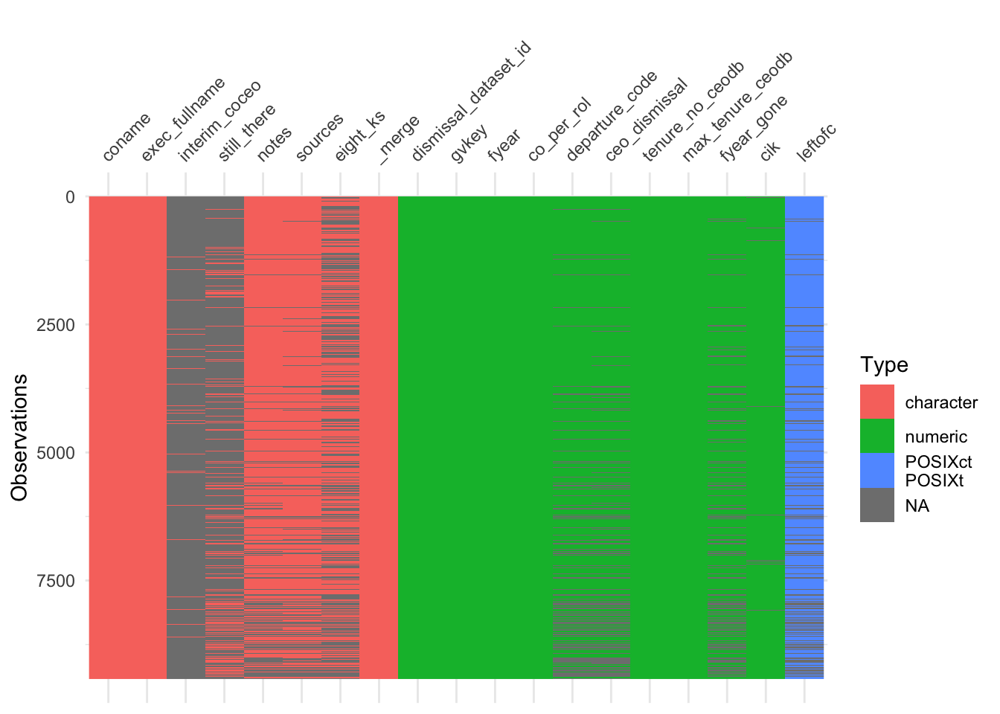
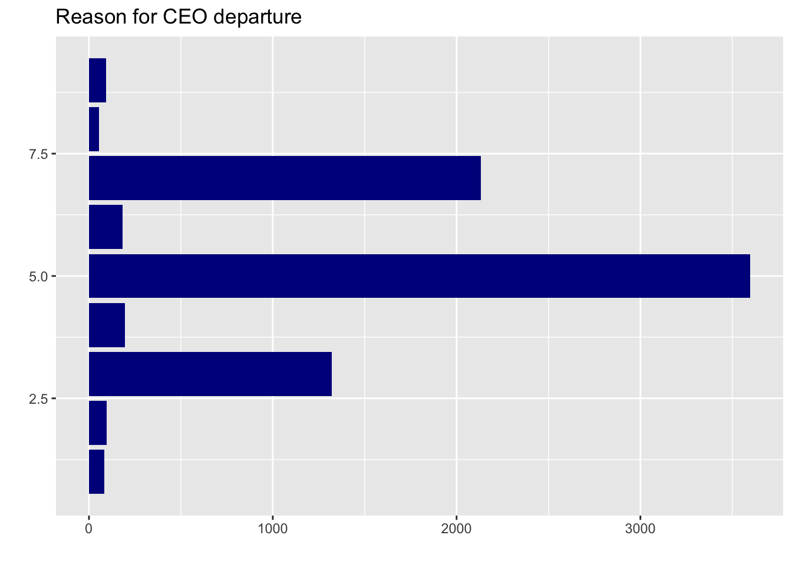
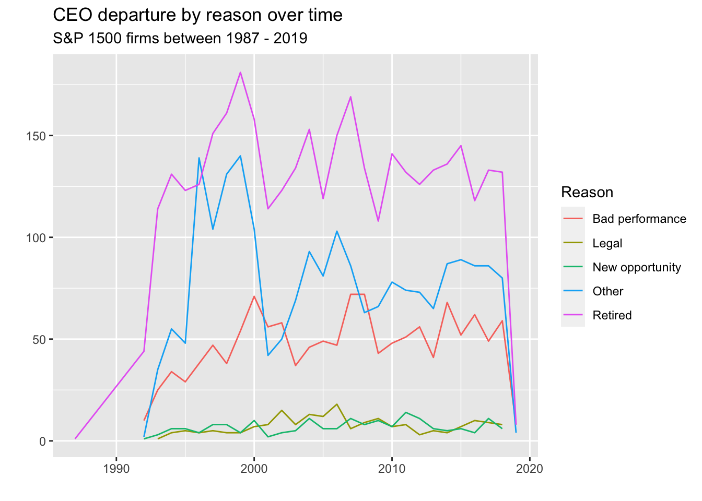
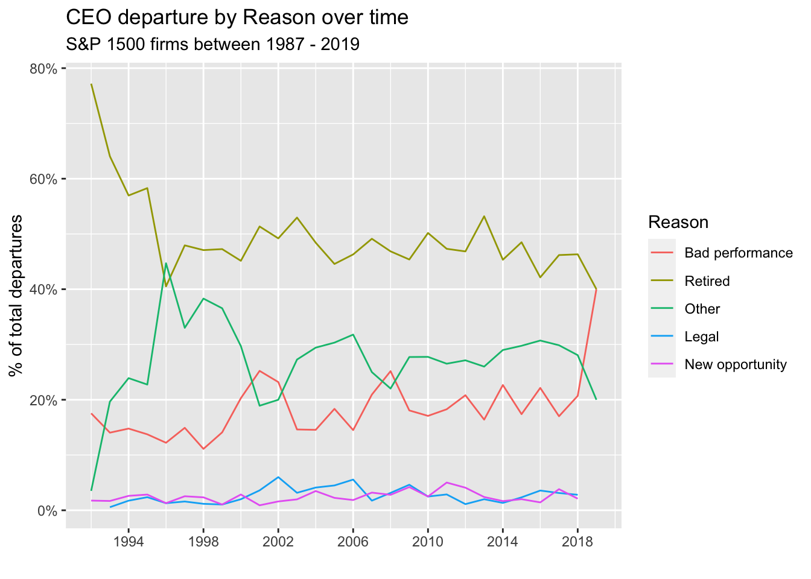
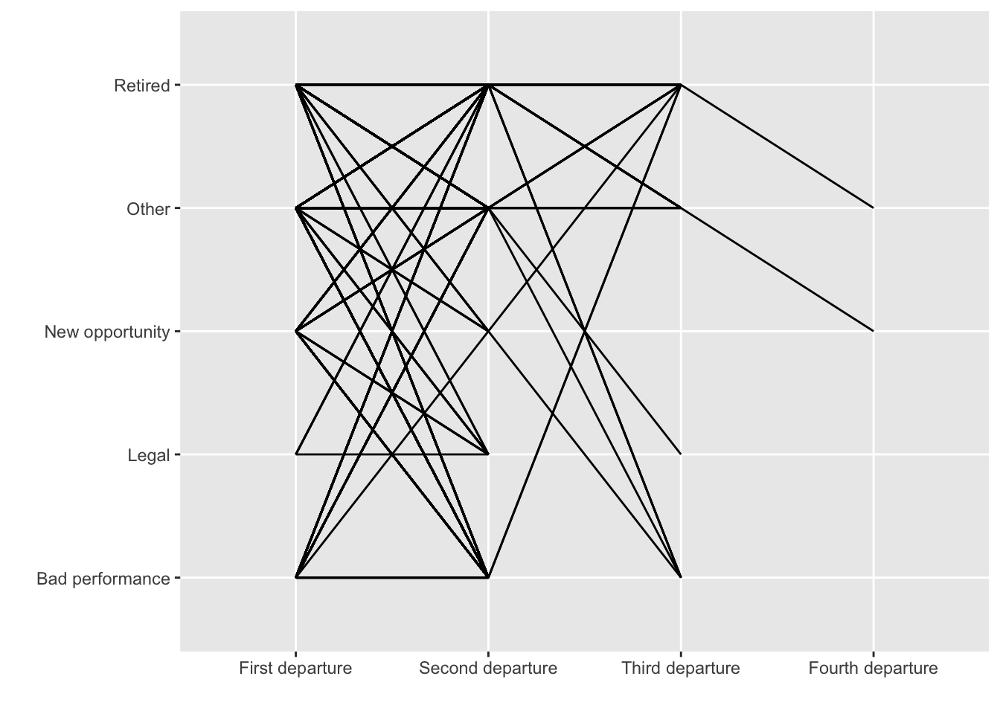
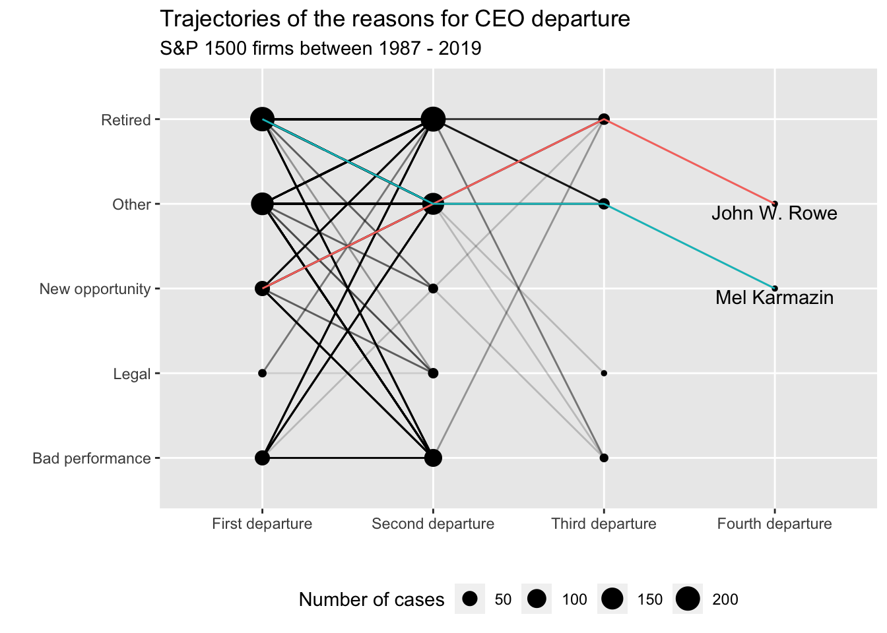

knitr::opts_chunk$set(echo = TRUE,
message = FALSE,
warning = FALSE,
fig.align = "center")Q1
Exercise 1
The blog post by Manuel Rademaker describes a neat analysis of the Tidy Tuesday data on CEO departures. Re-run this analysis for yourself. Report any problems reproducing the results. Your primary task for this exercise is to outline all of the parts of the analysis, and label them as EDA, IDA or confirmatory analysis.
library(tidytuesdayR)
library(tidyverse)
library(visdat)❌ One of the first issues observed while running the current analysis is the libraries which have been read.Towards the later sections of the analysis, we observe that the library “Ggplot2” has been extensively used for creating the plots to perform analysis. Hence, this library will be added in the code chunk below. ❌
tt <- tidytuesdayR::tt_load('2021-04-27')
Downloading file 1 of 1: `departures.csv`ceo <- tt$departuresThe data for CEO departures has been sourced from the Tidy Tuesday library. The analysis will be re-run and each section will be classified into one of the following types of analysis:
- Initial Data Analysis ⚠️:
- Exploratory Data Analysis 📊:
- Confirmatory Data Analysis 🎯:
Visualising the various datatypes in each variable
dim(ceo)[1] 9423 19## [1] 9423 20
vis_dat(ceo)
The above plot allows us to understand the various types of datatypes in each of the 20 variables in the dataset. The greyed out sections indicate the presence of null values in the dataset, while the colored sections indicate the corresponding datatype for each variable.
⚠️ Such a type of analysis allows us to understand the distribution of missing values, and the types of datatypes present in the dataset, further laying the path for the data pre-processing techniques to be used in later part of the analysis. Hence, we can classify such an analysis as Initial Data Analysis (IDA) . ⚠️.
Develop research questions and hypotheses
The following research questions were posed for the current dataset.
- What is the distribution of CEO departure reasons (by year (or every 5 years), overall)?
- Does the distribution change over the years (i.e. are CEOs now more likely to be removed for legal reasons for example)?
- Do CEOs that are fired (3 & 4) get fired again more often than others? Or in general: whats the likelihood of departing for reason x given reason y for dismissal.
- Look at companies and their CEO turnover. Which companies stand out (e.g., because they dismiss many CEOs).
- If possible, look at the history of some interesting CEOs. Maybe there are some that stand out (e.g. because they always left for legal reasons).
🎯 Setting up specific research questions and addressing key strategies to answer such questions generally forms a part of Confirmatory Data Analysis (CDA) . 🎯
Reason for CEO departure
ggplot(ceo, aes(y = departure_code)) +
geom_bar(fill = main_color) + # Main_color not defined yet
labs(
title = "Reason for CEO departure",
x = "",
y = ""
)❌ Based on the code chunk above, we can observe that the “fill” argument is based on the variable “main_color” which has not been specified in the current analysis. This throws up an error while plotting. Let us specify the variable main color. ❌
main_color <- "darkblue" #Main_Color defined
ggplot(ceo, aes(y = departure_code)) +
geom_bar(fill = main_color) +
labs(
title = "Reason for CEO departure",
x = "",
y = ""
)
As figure Figure 1 does not provide much information regarding CEO departures, the following techniques were done to improve the plot.
ceo %>%
group_by(fyear, departure_code) %>%
count()# A tibble: 255 × 3
# Groups: fyear, departure_code [255]
fyear departure_code n
<dbl> <dbl> <int>
1 1987 5 1
2 1992 1 1
3 1992 3 10
4 1992 5 44
5 1992 6 1
6 1992 7 2
7 1993 1 2
8 1993 2 1
9 1993 3 25
10 1993 4 1
# ℹ 245 more rowsceo_reduced <- ceo %>%
filter(departure_code %in% 3:7) %>%
mutate(
departure_label = as.factor(recode(departure_code,
`3` = "Bad performance",
`4` = "Legal",
`5` = "Retired",
`6` = "New opportunity",
`7` = "Other")),
fyear = lubridate::make_date(fyear)) %>%
relocate(fyear, departure_label)⚠️ Until this section, the code chunks majorly dealt with gaining more information from the raw data through data pre-processing. Such activities generally constitute an integral part of Initial Data Analysis (IDA) . ⚠️ .
#| label: fig-plot-res
#| fig-cap: "CEO depature by reason"
ceo_reduced %>%
group_by(departure_label) %>%
count() %>%
ggplot(aes(y = fct_reorder(departure_label, n), x = n)) +
geom_col(fill = main_color) +
labs(
title = "CEO depature by reason",
subtitle = "S&P 1500 firms between 1987 - 2019",
x = "",
y = "",
caption = "Source: Gentry et al."
) +
scale_x_continuous(breaks = scales::breaks_width(500))
💡 In this section, the bar graph visualisation helps us gain some important insights. Understanding the patterns and uncovering key understandings through the visualisations constitute an integral part of Exploratory Data Analysis (EDA) . 💡
Reason for departure over time
ceo_reduced %>%
group_by(fyear, departure_label) %>%
count() %>%
ggplot(aes(x = fyear, y = n, color = departure_label)) +
geom_line() +
labs(
title = "CEO departure by reason over time",
subtitle = "S&P 1500 firms between 1987 - 2019",
color = "Reason",
y = "",
x = ""
)
ceo_reduced %>%
filter(fyear != "1987-01-01") %>%
group_by(fyear, departure_label) %>%
count() %>%
group_by(fyear) %>%
mutate(share_fyear = n/sum(n)) %>%
ungroup() %>% # for fct_reorder!
mutate(departure_label = fct_reorder(departure_label, -share_fyear, last)) %>%
ggplot(aes(x = fyear, y = share_fyear, color = departure_label)) +
geom_line() +
labs(
title = "CEO departure by Reason over time",
subtitle = "S&P 1500 firms between 1987 - 2019",
color = "Reason",
x = "",
y = "% of total departures"
) +
scale_y_continuous(labels = scales::label_percent()) +
scale_x_date(
breaks = scales::breaks_width("4 years"),
labels = scales::label_date("%Y")
)
📈 In this section, we observe the use of plots to gain deeper insights for understanding the reasons for departure. The use of lineplots and the subsequent feature engineering done to create the proportion of departures are integral steps done in Exploratory Data Analysis (EDA) .📊
Trajectories
This section focuses specifically on CEOs who appear more than once in the dataset. The following code chunk creates the required variable and visualises the same using a lineplot as follows.
ceo_al_twice <- ceo_reduced %>%
group_by(exec_fullname) %>%
mutate(appears_al_twice = n(), .after = departure_label) %>%
filter(appears_al_twice > 1) %>%
ungroup()
length(unique(ceo_al_twice$exec_fullname))[1] 471table(ceo_al_twice$appears_al_twice) / c(2, 3, 4)
2 3 4
430 39 2 ⚠️ In the above code chunk, a table has been created with the headings of 2,3 and 4 total observations. However, if we have more than 4 departures (in the event of an updated data observation),the calculation will no longer be reproducible and accurate. ⚠️.
ceo_changes <- ceo_al_twice %>%
arrange(fyear) %>%
group_by(exec_fullname) %>%
mutate(departure_no = 1:n(), .after = departure_label,
departure_no = fct_inorder(recode(departure_no,
`1` = "First departure",
`2` = "Second departure",
`3` = "Third departure",
`4` = "Fourth departure"))) %>%
ungroup()
ggplot(ceo_changes, aes(x = departure_no, y = departure_label, group = exec_fullname)) +
geom_line() +
labs(
x = "",
y = ""
)
The above plot is a point plot which is used mainly for two sets of categorical axes. Since the above point plot is hard to understand by itself, hence, specific modifications are done in the next step to gain further insights.
📈 Usage of various plots such as the point plot in this case forms a part of Exploratory Data Analysis (EDA) .📊
ceo_changes_freq <- ceo_changes %>%
count(departure_label, departure_no)
ceo_4_changes <- ceo_changes %>%
filter(appears_al_twice == 4)
ggplot(ceo_changes, aes(x = departure_no, y = departure_label)) +
geom_line(aes(group = exec_fullname), alpha = 0.2) +
geom_point(
data = ceo_changes_freq,
mapping = aes(size = n)) +
geom_line(
data = ceo_4_changes,
mapping = aes(group = exec_fullname, color = exec_fullname),
show.legend = FALSE) +
geom_text(
data = filter(ceo_4_changes, departure_no == "Fourth departure"),
mapping = aes(label = exec_fullname),
nudge_y = -0.1
) +
labs(
title = "Trajectories of the reasons for CEO departure",
subtitle = "S&P 1500 firms between 1987 - 2019",
x = "",
y = "",
size = "Number of cases"
) +
theme(legend.position="bottom")
As per the analysis from the above plot, we are able to draw specific inferences. Some of these inferences were :
- Retirement doesn’t seem to be “final”. Some CEOs come back.
- Two CEOs appear 4 times in the data set. None of them left for legal or bad performance reasons.
- No overwhelmingly clear connection but certainly some interesting insights.
🎯 As we can observe, we are able to confirm clear inferences from the plots visualised. Being able make claims based on data,statistical treatments, and plots form an integral section of Confirmatory Data Analysis (CDA) . 🎯